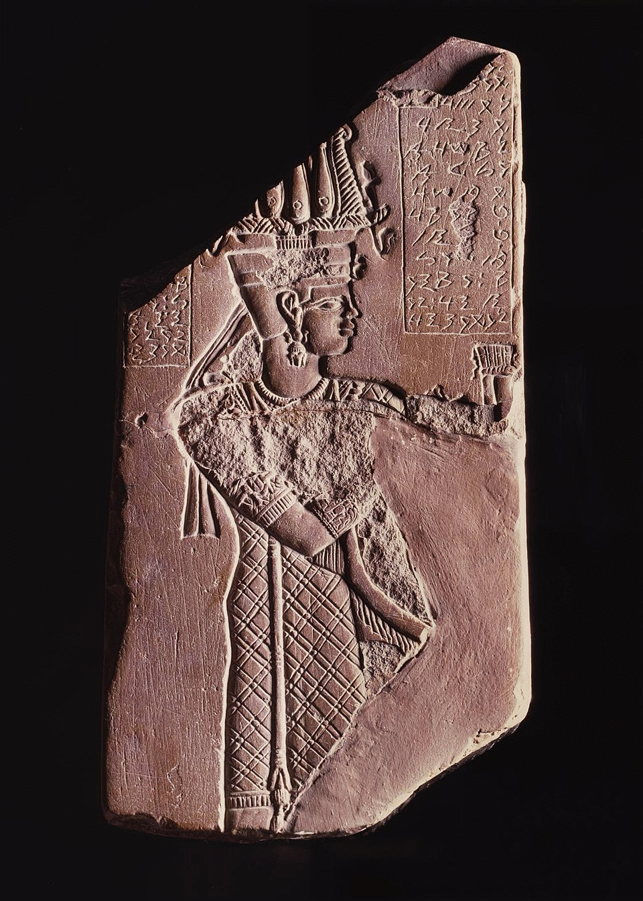
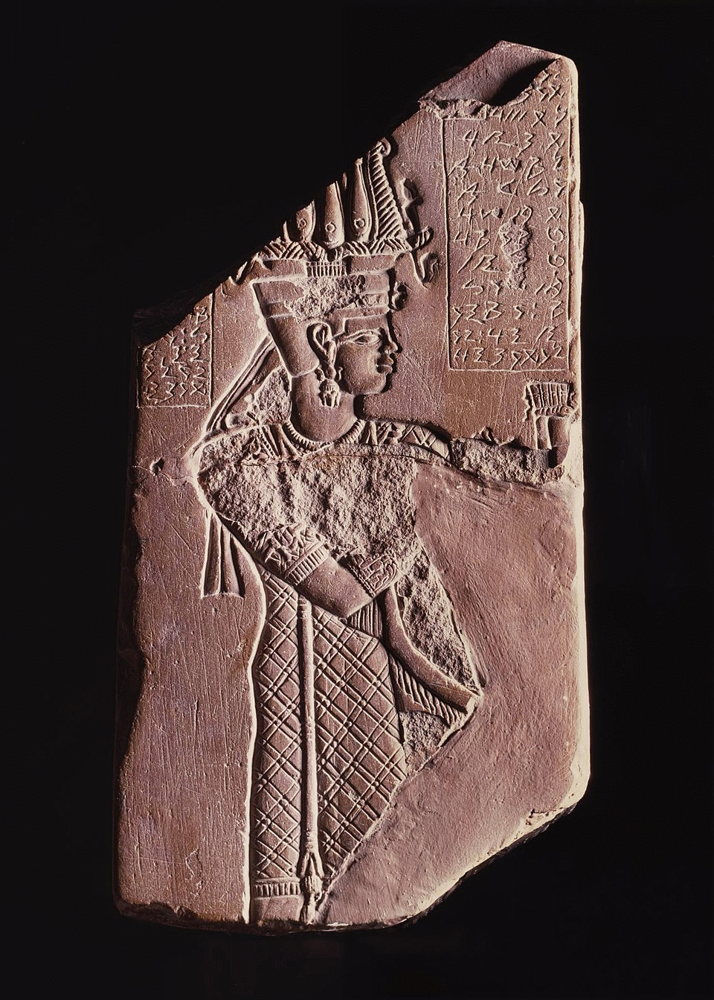
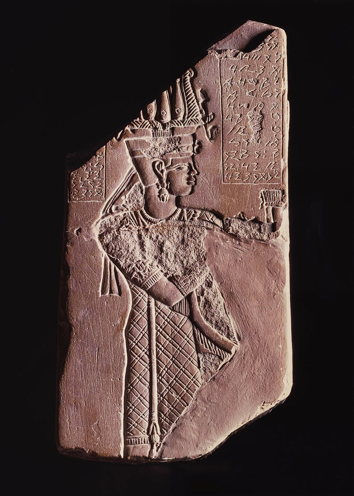
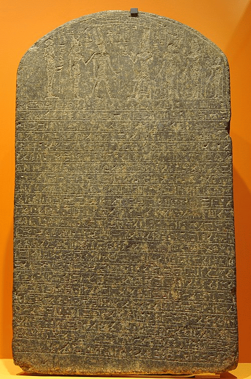
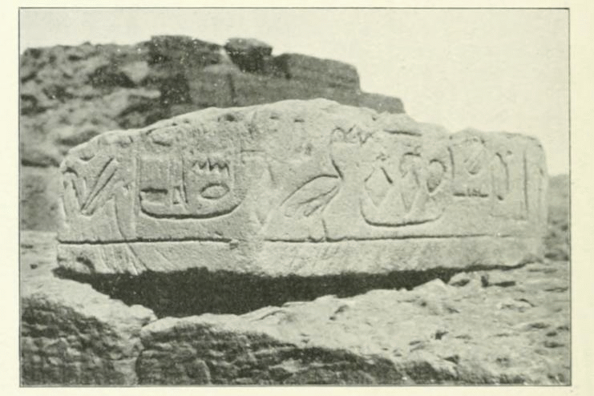
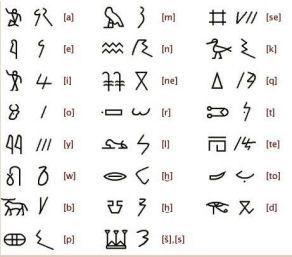

Meroitic is dead. Claude Rilly wants to resurrect it. The statement is simple; the matter is delicate. It was even considered lost, or almost lost, until very recent years.

The Meroitic language
The language of the kingdoms of Kerma, Napata, and Meroe, which succeeded one another in what is now Sudan between the middle of the third millennium BC and the fourth century AD, has long been extinct. "Probably at the very beginning of the Middle Ages," says the researcher, and "without descendants." However, the Meroe language has left abundant written traces: around a thousand documents have been unearthed to date, including magical and funerary texts, royal edicts, and so on. From the third century BC, the Meroites adapted to their language the writing system invented some twenty-five centuries earlier in Egypt, the powerful overlord of the north. Indeed, there are close relations between the Kushite and Egyptian civilizations. Egypt dominated the land of Kush for several centuries. The latter gave Egypt the kings of the 25th dynasty (circa 715-656 BC), that of the "black pharaohs," so named for the color of their skin.
For the majority of linguists, the probability was high that the language of Meroe was an isolate, that is to say, a language without any known relatives, like Sumerian in Mesopotamia, Mediterranean Etruscan, or Basque, still spoken in France and Spain. If this had been the case, the chances of one day being able to understand the speech of the black pharaohs would have been nil or almost nil. Sumerian, a mainly liturgical language that died out by the middle of the third millennium BC, could only be reconstructed thanks to the massive presence of Sumero-Akkadian bilingual tablets. As for Etruscan, which probably lost its last speakers shortly after the emergence of Rome, it still resists the sagacity of linguists.
A few bilingual stelae have, of course, made it possible to translate a small corpus of Meroitic terms. Nothing, far from it, that allows for a complete understanding of the unearthed texts. An Egyptologist and disciple of Jean Leclant, the founder, in the 1950s, of the French School of Nubian Studies, without initial training as a linguist, Claude Rilly has formulated, in recent years, the ambitious hypothesis of a connection between Meroitic and several languages spoken in present-day Sudan, Chad and Eritrea. Studied for twenty years by the American linguist Lionel Bender, Nubian, the Taman dialects, Nara and Nyima have been grouped by Mr. Rilly, along with Meroitic, in the North Eastern Sudanic (SON) group, a subset of the large Nilo-Saharan language family. Comparisons between known Meroitic terms and their equivalents in the various languages of the SON group validate Mr. Rilly's postulate. But, to definitively open the way to a complete understanding of Meroitic, it remains to reconstruct the lexicon of proto-SON, the protolanguage from which these idioms derive. This is a considerable task, especially since not all the languages of the group are yet fully documented.
The translation of the edicts of the rulers of Meroe would help to shed light on certain gray areas in the history of the land of Kush, but also of its Egyptian neighbor. In addition to the historical and linguistic aspects, these works, by Mr. Rilly's own admission, have an "almost political" dimension. Since the Egyptian spoken at the court of the pharaohs (from which Coptic derives) is a Hamito-Semitic language related to the idioms of the Levant, Meroitic is indeed the first typically African language to have been written down. Rediscovering it would also restore to Africa a glorious, but lost, part of its history.
Stéphane Foucard/Le Monde 2005

The Meroitic alphabet
The Meroitic syllabary exists in two forms, cursive and hieroglyphic. It was fully deciphered in 1911 by the British Egyptologist Francis Llewelyn Griffith, thanks to a bilingual stele containing Egyptian and Meroitic hieroglyphic inscriptions. This made it possible to establish the phonetic values of each sign in the graphic system. All the inscriptions can therefore be read and pronounced. But they remain misunderstood.

Link (in French) : MEROITIC FONT FOR PC AND MACINTOSH